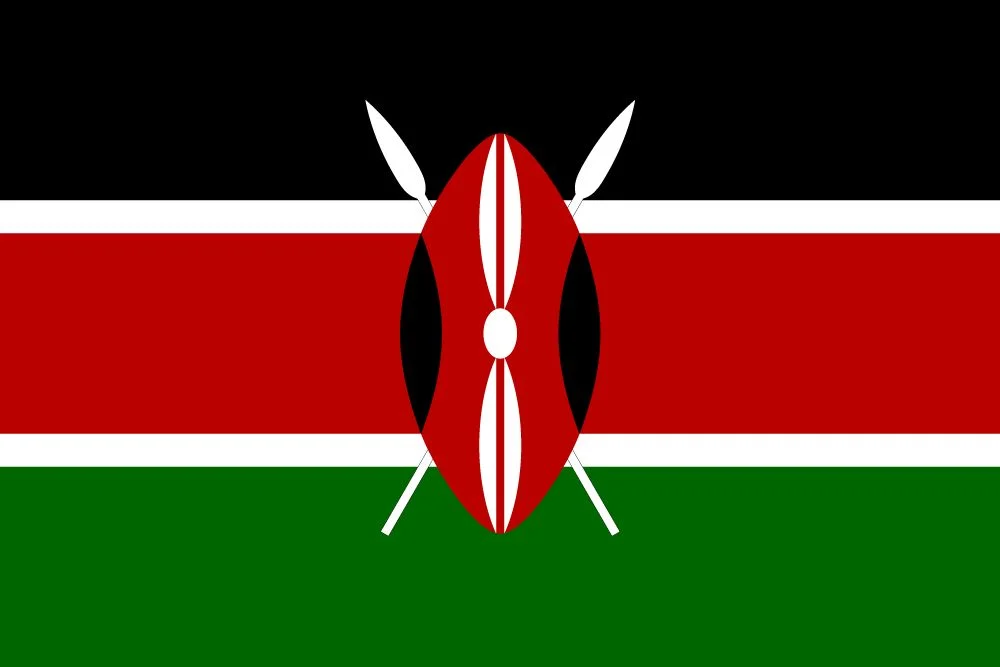

Day 9: Summary and Review
Congratulations on completing your journey through Africa! Let's review what you've learned:
Highlights of Your Journey
- North Africa: Explored the rich history, including the Pyramids of Egypt and ancient cities.which country flag`s below?
-
West Africa: Discovered the vibrant cultures and festivals in countries like Nigeria and Ghana.which country flag`s below?

- East Africa: Explored the diverse landscapes, from the Serengeti to Mount Kilimanjaro.which country flag`s below? 
-
Southern Africa: Learned about the natural wonders and wildlife, including safaris in South Africa.which country flag`s below?

-
Islands of Africa: Explored the unique islands, from Madagascar to Seychelles, with beautiful beaches and rich marine life.which country flag`s below?

Did You Know?
üåç Africa is the second-largest continent in the world, both in size and population.
üêò The Serengeti in Tanzania is home to one of the largest wildlife migrations on earth.
üóø The Great Pyramid of Giza is the oldest of the Seven Wonders of the Ancient World and the only one to remain largely intact.
What Did You Enjoy the Most?
Think about your favorite parts of Africa. Was it the pyramids of Egypt, the safaris in Kenya, or the beautiful beaches of Mauritius? Share your thoughts!
Time to check how do you remember about africa!
Let's test your knowledge with a fun exam! Answer the questions and see how much you remember about Africa .
click finish and click on exam to take your gift of questions and you will be certified if you got 40 marks and above on 50 marks